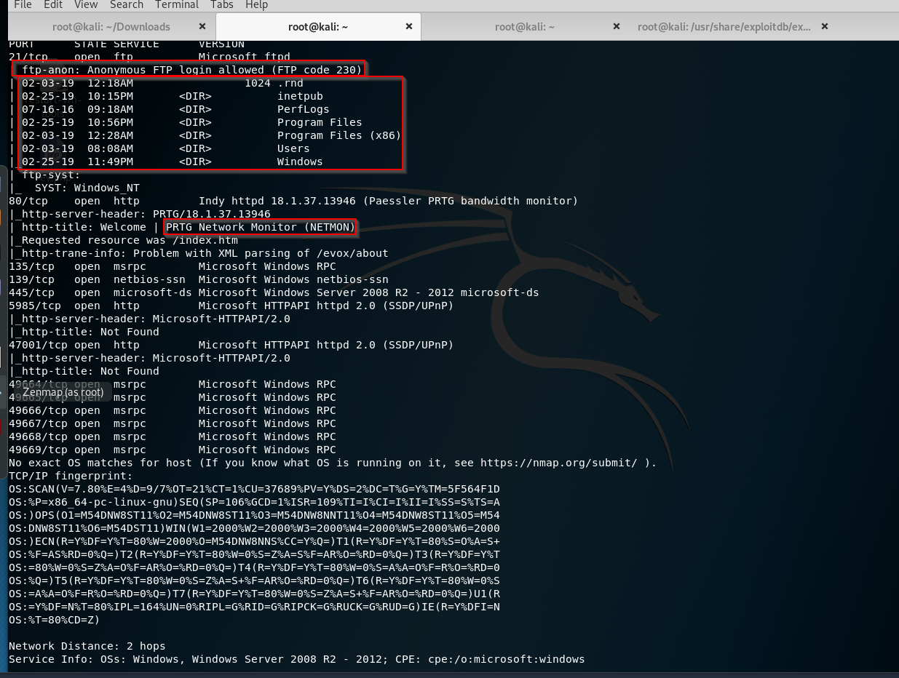

looks like in ftp side we are in c drive and this is not so great if we are system admin and we allowed that open.
the name of the box gives us hint so probably our atatck vector is going to be PRTG Network Monitor.
Okey if port21 is open for anonymous login we can upload some malicious files and execute them through a web server like port 80 or
port 47001 for example.
Now this is microsoft ftpd server if it was a different file protocol ftp server, maybe there's remote code execution already built in or some sort of buffer overflow something allows us to get that shell back but in this instance there is not.
So we can upload malicious files all the day but unless execute that file this'll be pointless.
so let's go to the web page

okay i've tried admin admin and i've searched for default credentials and tried these as well but no luck. Let's look at exploits.

this is for authenticated users so we need to log in to that.

it looks like we're providing cookies
so we need to look for a database file or where that might be stored. Perhaps we can go to google and say "prtg network monitor db file location"

(https://kb.paessler.com/en/topic/463-how-and-where-does-prtg-store-its-data)
in this link probably we need to hunt around to try to find credentials so let's do that and we'll do that through ftp.

with ls -la we could see the hidden directories

there is Paessler folder which we've seen while searching on google.

let's download that files and see what's there


this is encrypted let's look at a different one.


we've find it!
now this is gonna be realistic look at that.

we've tried that credentials but we failed what do we do now? let's try 2019 instead of 2018

we succeed.
This is realistic because we just changed one number off of a password and gained access
password reuse is one of the biggest issues that we have in the industry. So if we see like a password for example fall2019 we should try fall2020 too. Actually that's the gist of the this machine. Let's open up burpsuit to find cookies.

now let's copy paste the exploit we've seen

don't forget to space under the /bin/bash for declaring

let's fire this up.

now let's try these credentials.
let's install impacket.
what is impacket?
https://www.secureauth.com/labs/open-source-tools/impacket


(https://web.archive.org/web/20140625065218/http://blog.accuvant.com/rdavisaccuvant/owning-computers-without-shell-access/)
Now when it comes to pen testing this method is picked up a lot less than the Metasploit method.
They still upload some sort of reverse shell but Metasploit picked up a lot easier by antivirus especially when you don't know what you're up against .
even better is something like smbexec.py or wmiexec.py
All of those use the same syntax are part of the same package
smbexec and wmiexec are picked up way less than psexec does.
But let's try psexec.

we did it and we did it without metasploit. Now do that with wmiexec.py

this is semi-interactive shell and some commands will run some won't but this is a good way to kind of navigate yourself around the network. And just kinda see where you are at.

let's try out with smbexec just a proof of concept.

again just a semi-interactive the full interactive one is with psexec.py
And this makes sense right because we said that smbexec and wmiexec is better in terms of stealth.
Especially if you're up against antivirus or something then you can go to like programfiles or you can even look through you know you can query and see what kind of antivirus is in there what kind of firewall rules are in there.
And you kind of get the lie of the land with your smbexec or wmiexec before you actually try to attempt a meterpreter shell.
THINK LIKE A DUMB USER WOULD THINK AND YOU'LL BE SUCCESSFULL